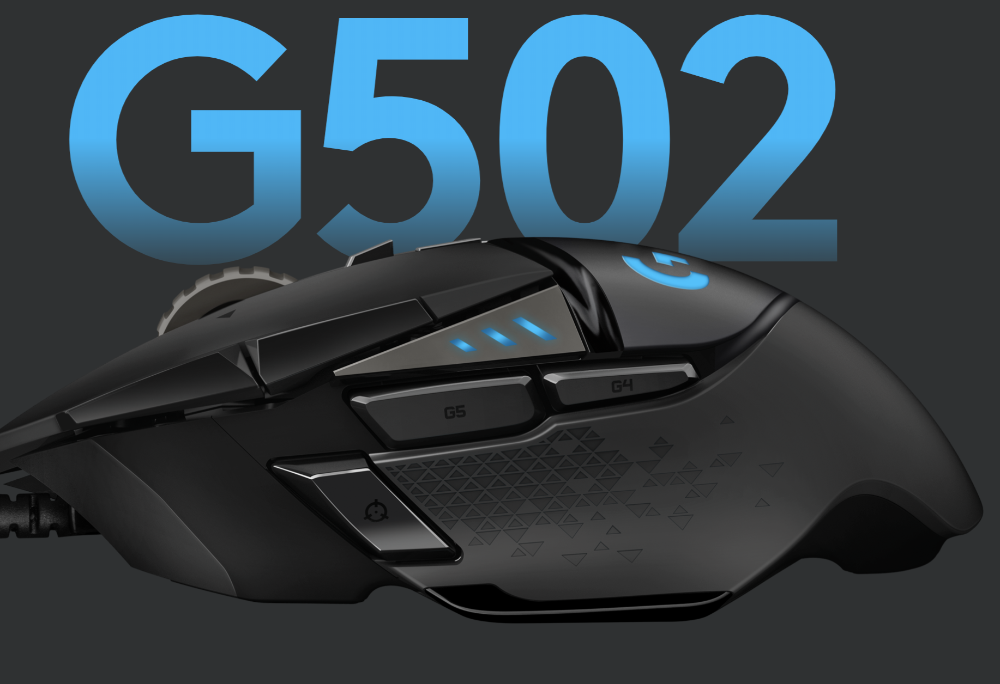

At Techer games we can provide affordable and optimal options for
gamers if all kinds. Wether your an avid pc gamer with a powerful
gaming setup, or just someone looking for another game to download
and play on the toilet on their nintendo switch, you can come to us
The most expensive option isn't always the best when it comes to computers. Brand loyalty and artificial superiority are problem that first time buyers struggle with. Although the high quality of products created by companies such as Razer and Alienware can't be ignored, there are plenty of decent quality more affordable options on the market
With mice there are plenty of options. Companies
like Razer and Logitech make incredible options for
gaming mice and regular office mice. Wiresless mice
sport the convinience of not having wires, but
they aren't recommended for gaming due to the slight
delay that may mean the difference between victory and
crushing defeat. Gaming mice with multiple
programmable buttons like Logitech G502 HERO,
(an affordable high quality mouse) and
the the Razer naga trinity. The naga trinity
has 3 different options to change,
one with 12 bindable buttons, 2 buttons,
and 7 respectively.